A city school where children learn through technology, reading, arts, international understanding, and local citizenship.
一所位於彰化市的國小，透過科技、閱讀、藝術、國際理解與在地公民素養，陪伴孩子看見自己的力量。
Pinghe Elementary School is located on Zhongzheng Road in Changhua City. The school turns everyday campus life into learning opportunities: students practice English through short videos, explore school spaces through bilingual names, and discover how local experiences can connect with the wider world.
平和國小位於彰化市中正路二段。學校把日常校園生活轉化為學習機會：孩子透過短影片學英文、透過雙語名稱認識校園空間，也在在地經驗中練習連結更寬廣的世界。
At the center of Pinghe's story is the TRAIN curriculum framework: Technology, Reading, Art, International understanding, and Native / Nature learning. It gives the bilingual site a clear path: learn from campus, learn with the community, and learn toward the world.
平和的校本特色以 TRAIN 五力為主軸：Technology 科技、Reading 閱讀、Art 藝術、International 國際理解，以及 Native / Nature 在地與自然。這也成為本站的敘事路線：從校園出發，連結社區，走向世界。
五個字的第一個字母，合起來就是 TRAIN！
Students use digital tools, computer class, presentations, and creative problem solving to build confidence for future learning.
Reading, worksheets, vocabulary challenges, and classroom routines help students turn language into a daily habit.
Dance, music, recorder, rehearsal, and performance give students a stage for expression and self-confidence.
Word of the Day videos, campus English, and bilingual events help children use English for real situations.
Local culture, environmental care, and community awareness help students grow into engaged, responsible citizens.
On the field, on stage, and everywhere in between.
在球場上、在舞台上，平和的孩子處處發光。
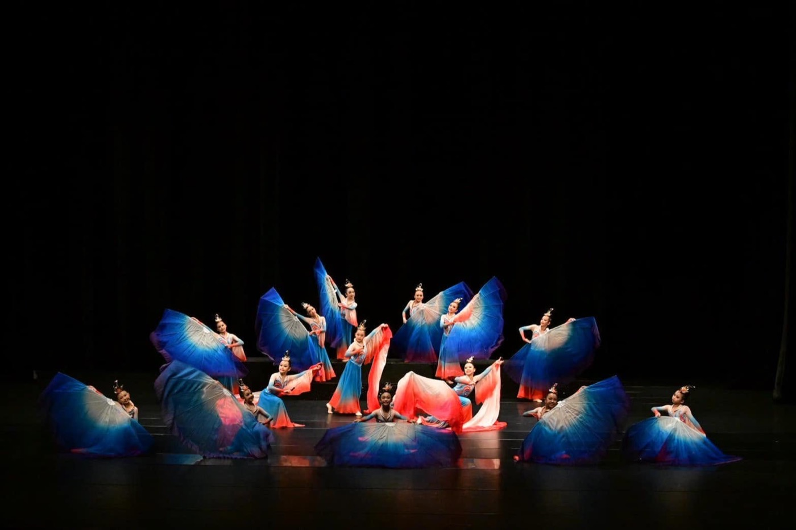
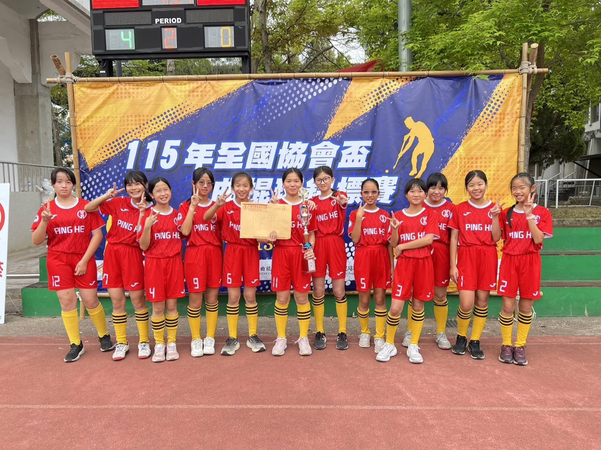
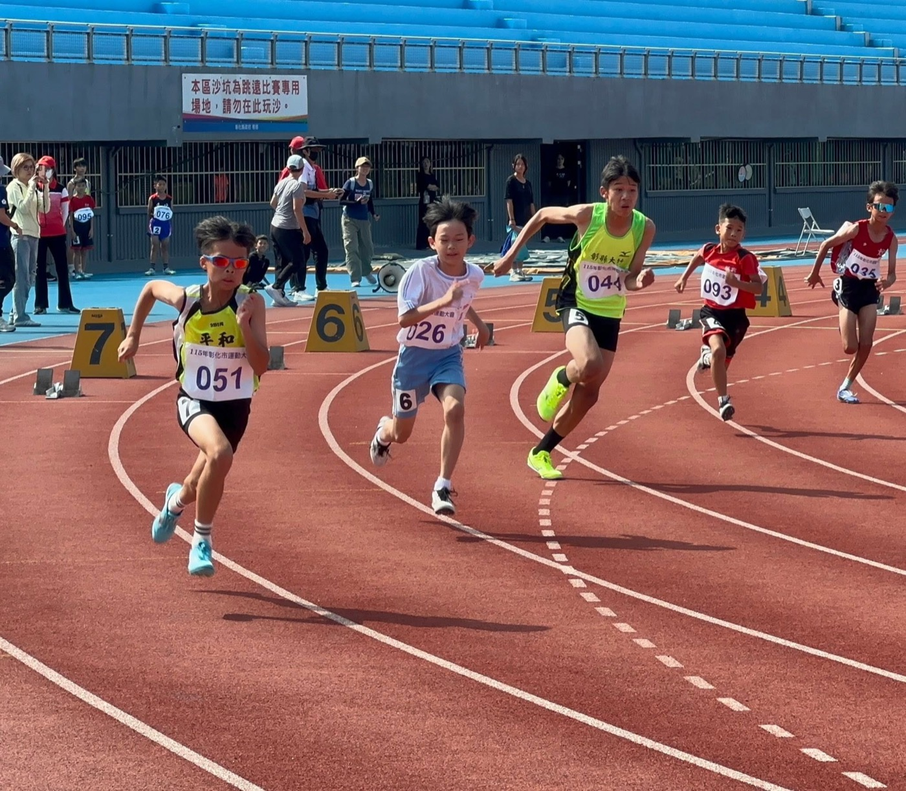
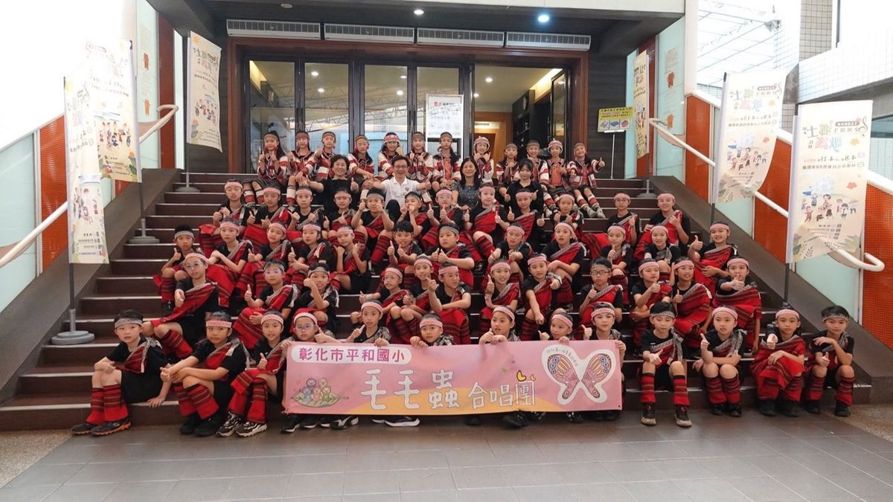
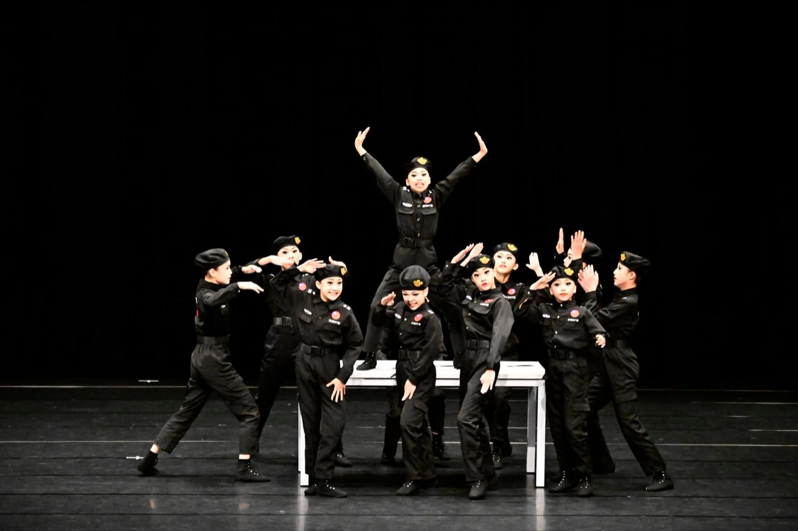
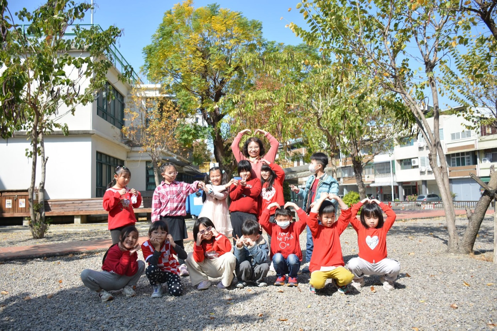
A walk around Pinghe — from the front gate to the playground.
走一圈平和校園，從校門口走到遊戲場。
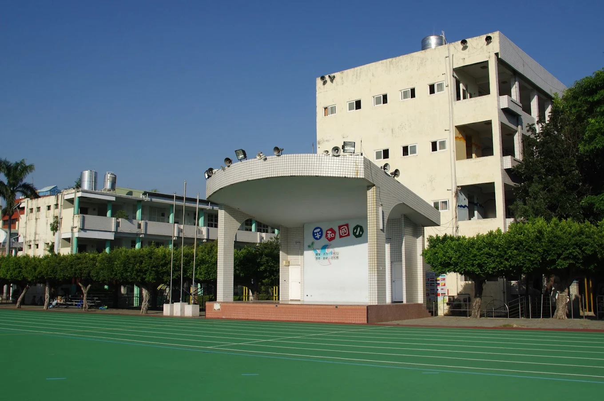
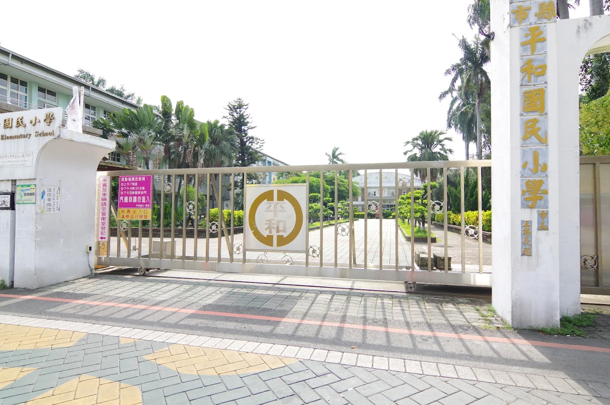
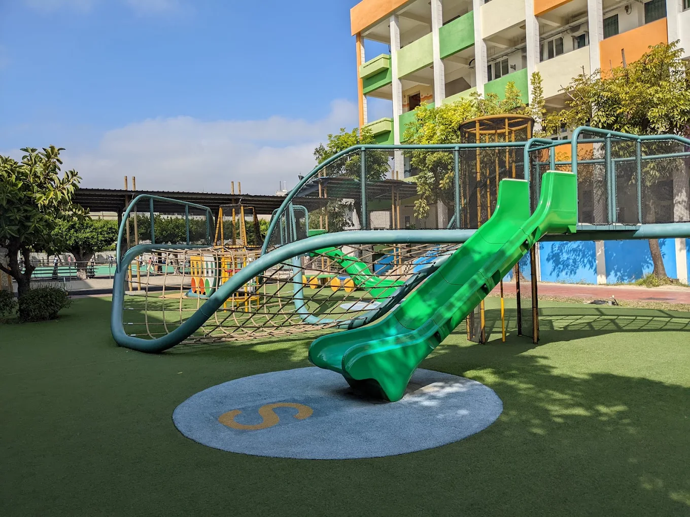
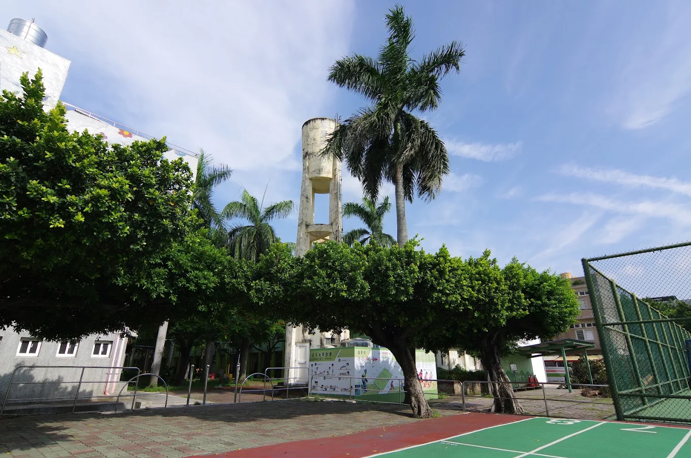
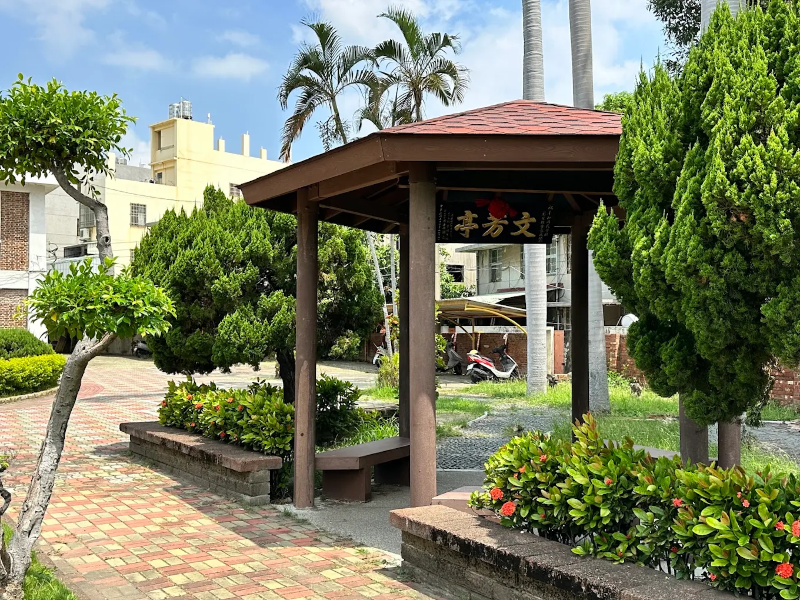
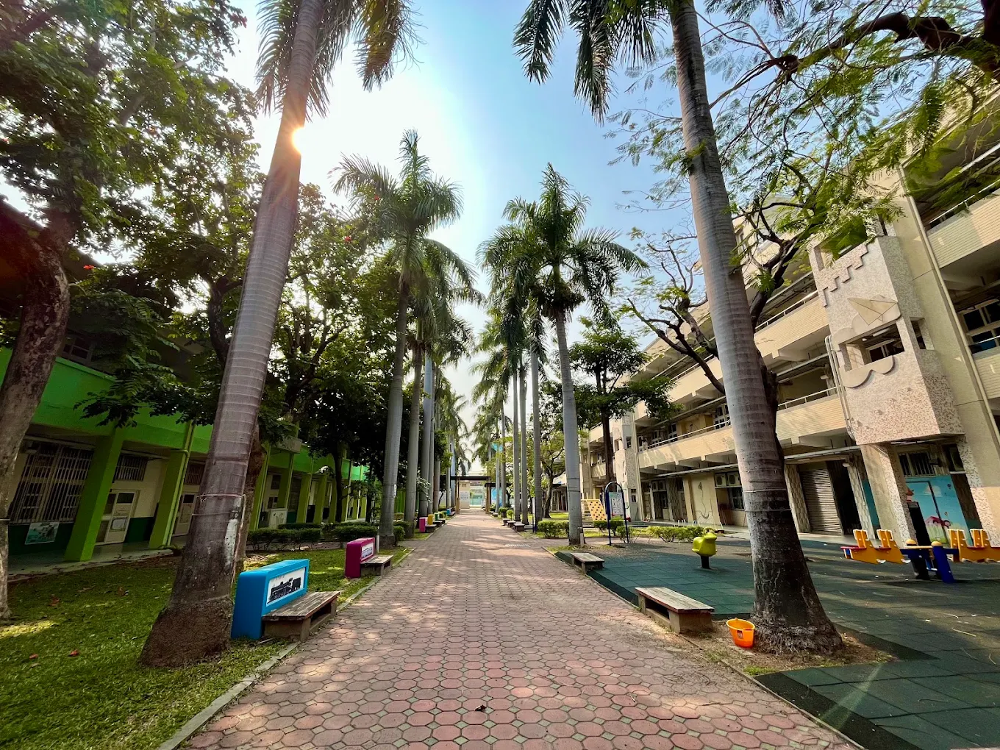